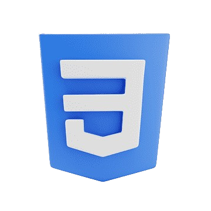
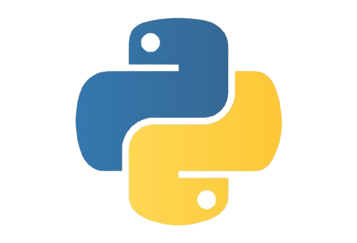
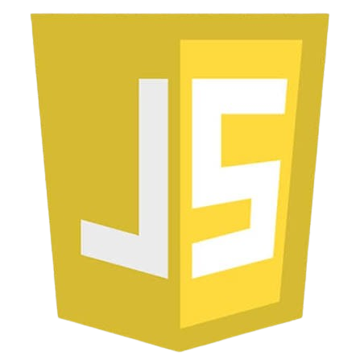
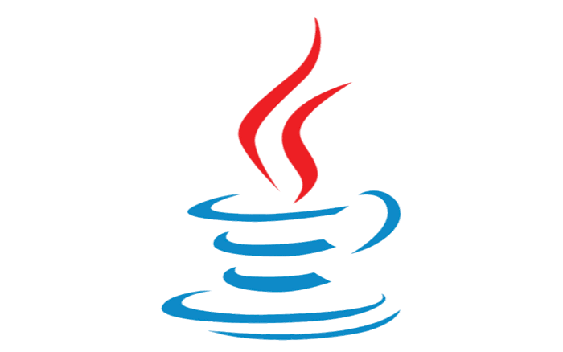
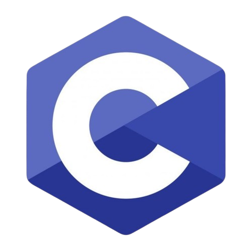

TRABAJAR
Soy Franyer Torres y estoy apasionado por el desarrollo backend, automatización de procesos y diseño de interfaces web eficientes. Centrado en construir soluciones limpias, escalables y funcionales.

Acerca De Mí
Actualmente curso los últimos semestres de Ingeniería de Sistemas, mientras continúo aprendiendo y adquiriendo nuevas habilidades. Cursos completados: Desarrollador Front-end y Contabilidad Empresarial (Básica).
Edad: 22 años.
Lugar De Residencia: Resido en la capital de Venezuela, Caracas.
Me apasiona la música como expresión creativa y técnica que ha acompañado mi crecimiento constante.
Me fascinan los videojuegos, apreciando tanto sus mecánicas y diseño de software como sus narrativas y cinemáticas.
Habilidades Blandas
- Liderazgo Técnico
- Gestión del Tiempo
- Resolución Lógica de Problemas
- Comunicación Asertiva
- Pensamiento de Arquitectura Limpia (Boy Scout rule)
- Trabajo en Equipo
- Visibilidad Temprana
- Capacidad Autodidacta
- Adaptabilidad
- Escucha Activa en Revisiones de Código
Lenguajes Aprendidos





Habilidades Técnicas
- Python: Scripts de automatización, parsers multiformato (JSON, Excel, TXT), herramientas de conversión y aplicaciones GUI con Tkinter.
- Modelado y Calidad de Datos: Auditorías lógicas para detección de duplicados, validación de formatos e integridad de datos.
- JavaScript / HTML5 / CSS3: Desarrollo web full-stack, consumo de APIs y diseño de interfaces modulares.
- PostgreSQL: Diseño de esquemas relacionales, consultas de auditoría, funciones de coincidencia de patrones y optimización de consistencia.
- Docker & Docker Compose: Orquestación de servicios en contenedores, aislamiento de redes internas y volúmenes persistentes.
- Linux (Ubuntu Server): Despliegue y gestión de infraestructura local/virtualizada.
- Proxy Inverso y Redes: Configuración de Caddy, Portainer CE, Pi-hole y herramientas como Wireshark y Nmap.
- Git & GitHub: Control de versiones, documentación (READMEs) y despliegue en GitHub Pages.
- Integración Continua (CI/CD): Flujos automatizados con GitHub Actions para compilación de proyectos.
- Empaquetado Multiplataforma: Uso de Capacitor para integración y generación de aplicaciones móviles.
- Ingeniería de Prompts y Herramientas IA: Dominio en la formulación de prompts estructurados para acelerar el desarrollo de software, depuración de código, prototipado y generación de documentación.